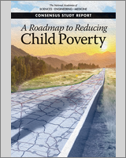
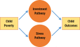
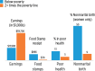
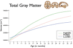
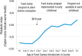

NCBI Bookshelf. A service of the National Library of Medicine, National Institutes of Health.
National Academies of Sciences, Engineering, and Medicine; Division of Behavioral and Social Sciences and Education; Committee on National Statistics; Board on Children, Youth, and Families; Committee on Building an Agenda to Reduce the Number of Children in Poverty by Half in 10 Years; Le Menestrel S, Duncan G, editors. A Roadmap to Reducing Child Poverty. Washington (DC): National Academies Press (US); 2019 Feb 28.

A Roadmap to Reducing Child Poverty.
Show detailsConsequences of Child Poverty
In response to the first element of the committee's statement of task, this chapter summarizes lessons from research on the linkages between children's poverty and their childhood health and education as well as their later employment, criminal involvement, and health as adults. It also provides a brief review of research on the macroeconomic costs of child poverty. Because this research literature is vast, the committee focused its review on the most methodologically sound and prominent studies in key fields, primarily in developmental psychology, medicine, sociology, and economics. All else equal, we also selected more recent studies.
We find overwhelming evidence from this literature that, on average, a child growing up in a family whose income is below the poverty line experiences worse outcomes than a child from a wealthier family in virtually every dimension, from physical and mental health, to educational attainment and labor market success, to risky behaviors and delinquency.
This finding needs to be qualified in two important ways. First, although average differences in the attainments and health of poor and nonpoor children are stark, a proportion of poor children do beat the odds and live very healthy and productive lives (Abelev, 2009; Ratcliffe and Kalish, 2017).
Second, and vital to the committee's charge, is the issue of correlation versus causation. Income-based childhood poverty is associated with a cluster of other disadvantages that may be harmful to children, including low levels of parental education and living with a single parent (Currie et al., 2013). Are the differences between the life chances of poor and nonpoor children a product of differences in childhood economic resources per se, or do they stem from these other, correlated conditions? Evidence both on the causal (as distinct from correlational) impact of childhood poverty and on which pathways lead to better outcomes is most useful in determining whether child well-being would be best promoted by policies that specifically reduce childhood poverty. If it turns out that associations between poverty and negative child outcomes are caused by factors other than income, then the root causes of negative child outcomes must be addressed by policies other than the kinds of income-focused anti-poverty proposals presented in this report.
That said, most of the scholarly work on poverty and the impacts of anti-poverty programs and policies on child well-being is correlational rather than causal. There is much to be learned from these studies, nevertheless, and it is often the case that evidence derived from experimental designs and that derived from correlational designs lead to similar conclusions. To maintain clarity in our reviews of these two strands in the literature, we have opted to focus this chapter's main text on the results found in the causal literature, while we review the correlational literature in the Chapter 3 portion of Appendix D.
We begin with a brief summary of the mechanisms by which childhood poverty may cause worse childhood outcomes, along with lessons from the vast correlational literature, which is reviewed in depth in this chapter's appendix. We then turn to a review of the causal impacts of policies—income policies as well as anti-poverty policies—on child well-being, derived from both experimental and quasi-experimental (natural experiment) studies. The chapter concludes with a brief review of some of the limited literature on the macroeconomic costs of poverty to society.
Note that virtually all of the available evidence focuses on child poverty as measured by the Official Poverty Measure (OPM) rather than the Supplemental Poverty Measure (SPM) that is used in other chapters of this report. Given the considerable overlap in terms of who is considered poor by both measures, we would expect that the bulk of the lessons from OPM-based studies would carry over to the SPM.
WHY CHILDHOOD POVERTY CAN MATTER FOR CHILD OUTCOMES
Economists, sociologists, developmental psychologists, and neuroscientists each emphasize different ways poverty may influence children's development. Two main mechanisms have been theorized to describe these processes (see Figure 3-1). One emphasizes what money can buy—in other words, how poverty undermines parents' ability to procure the goods and services that enhance children's development. An alternative mechanism emphasizes the detrimental impact on families of exposure to environmental stressors as a key pathway by which poverty compromises children's development.

FIGURE 3-1
Hypothesized pathways by which child poverty affects child outcomes.
As detailed in Chapter 8 and in the appendix to this chapter, low-income parents face steep challenges in meeting basic financial needs. Many poor families are not only cash-constrained but they also have little to no savings and lack access to low-cost sources of credit (Halpern-Meekin et al., 2015; Yeung and Conley, 2008; Zahn, 2006). When faced with income shortfalls, they are often forced to cut back on expenditures, even for essential goods such as food and housing, and to pay high interest rates on loans (McKernan, Ratcliffe, and Quakenbush, 2014). As a result, poverty is linked to material hardship, including inadequate shelter and medical care, food insecurity, and a lack of other essentials (Ouellette et al., 2004).
An “investment” perspective may be adopted in addressing the challenge of poverty reduction by building on an analysis of the foregoing problems, emphasizing that higher income may support children's development and well-being by enabling poor parents to meet such basic needs. As examples, higher incomes may enable parents to invest in cognitively stimulating items in the home (e.g., books, computers), in providing more parental time (by adjusting work hours), in obtaining higher-quality nonparental child care, and in securing learning opportunities outside the home (Bornstein and Bradley, 2003; Fox et al., 2013; Raver, Gershoff, and Aber, 2007). Children may also benefit from better housing or a move to a better neighborhood. Studies of some poverty alleviation programs find that these programs can reduce material hardship and improve children's learning environments (Huston et al., 2001; Morris, Gennetian, and Duncan, 2005).
The alternative, “stress” perspective on poverty reduction focuses on the fact that economic hardship can increase psychological distress in parents and decrease their emotional well-being. Psychological distress can spill over into marriages and parenting. As couples struggle to make ends meet, their interactions may become more conflicted (Brody et al., 1994; Conger et al., 1994). Parents' psychological distress and conflict have in fact been linked with harsh, inconsistent, and detached parenting. Such lower-quality parenting may harm children's cognitive and socioemotional development (Conger et al., 2002; McLoyd, 1990). All of this suggests that higher income may improve child well-being by reducing family stress.
Investing in children and relieving parental stress are two different mechanisms, but they overlap and reinforce each other. For example, both increased economic resources and improved parental mental health and family routines may result in higher-quality child care, more cognitively enriching in-home and out-of-home activities, and more visits for preventive medical or dental care. Better child development, in turn, can encourage more investment and better parenting; for example, more talkative children may trigger more verbal interaction and book reading from their parents, especially if parents can afford to spend the necessary time.
We have focused on parental stress, because reducing poverty may ameliorate this stress and improve parenting, including emotional support for and interactions with children. In addition, a major portion of existing research has focused on this pathway. We recognize that child stress is an important factor leading to negative child outcomes, including effects on early brain development (Blair and Raver, 2016, Shonkoff et al., 2012). We have not included it in the model (refer to Figure 3-1) because it is a more indirect mediator of the effects of other factors of poverty on child outcomes. These other factors include parenting stress, other adverse child experiences, and the negative impacts of underresourced schools and environments in poor neighborhoods. For a more extensive review of both parental and child stress, please see the appendix to this chapter (Appendix D, 3-1).
CONCLUSION 3-1: Poverty alleviation can promote children's development, both because of the goods and services that parents can buy for their children and because it may promote a more responsive, less stressful environment in which more positive parent-child interactions can take place.
The foregoing brief discussion is intended only to provide a framework in which the correlational and causal studies of the impacts of poverty can be understood. We provide a more complete review of the literature about some of these pathways in Chapter 8 and in the appendix to this chapter.
CORRELATIONAL STUDIES
Many studies document that, on average, children growing up in poor families fare worse than children in more affluent families. A study by Duncan, Ziol-Guest, and Kalil (2010) is one striking example (see Figure 3-2). Their study uses data from a national sample of U.S. children who were followed from birth into their 30s and examines how poverty in the first 6 years of life is related to adult outcomes. What they find is that compared with children whose families had incomes above twice the poverty line during their early childhood, children with family incomes below the poverty line during this period completed 2 fewer years of schooling and, as adults, worked 451 fewer hours per year, earned less than one-half as much, received more in food stamps, and were more than twice as likely to report poor overall health or high levels of psychological distress (some of these differences are shown in Figure 3-2). Men who grew up in poverty, they find, were twice as likely as adults to have been arrested, and among women early childhood poverty was associated with a six-fold increase in the likelihood of bearing a child out of wedlock prior to age 21. Reinforcing the need to treat correlations cautiously, Duncan, Ziol-Guest, and Kalil (2010) also find that some, but not all, of these differences between poor and nonpoor children disappeared when they adjusted statistically for differences in factors such as parental education that were associated with low childhood incomes.

FIGURE 3-2
Adult outcomes for children with lower and higher levels of early childhood income. SOURCE: Adapted from Duncan, Ziol-Guest, and Kalil (2010).
Neuroscientists have produced striking evidence of the effect of early-life economic circumstances on brain development. Drawing from Hanson et al. (2013), Figure 3-3 illustrates differences in the total volume of gray matter between three groups of children: those whose family incomes were no more than twice the poverty line (labeled “Low SES” in the figure); those whose family incomes were between two and four times the poverty line (“Mid SES”); and those whose family incomes were more than four times the poverty line (“High SES”). Gray matter is particularly important for children's information processing and ability to regulate their behavior. The figure shows no notable differences in gray matter during the first 9 or so months of life, but differences favoring children raised in high-income families emerge soon after that. Notably, the study found no differences in the total brain sizes across these groups—only in the amount of gray matter. However, the existence of these emerging differences does not prove that poverty causes them. This study adjusted for age and birth weight, but not for other indicators of family socioeconomic status that might have been the actual cause of these observed differences in gray matter for children with different family incomes.

FIGURE 3-3
Total gray matter volume in early life, by socioeconomic group. SOURCE: Hanson et al. (2013).
Two themes from these two studies characterize much of the child poverty literature: (1) consistent correlations between a child's poverty status and later outcomes and (2) particularly strong associations when poverty status is measured early in childhood. Our review of this correlational literature, which is provided in this chapter's appendix, is organized into the following sections: family functioning, child maltreatment, domestic violence, and adverse childhood experiences; material hardship; physical health; fetal health and health at birth; brain development; mental health; educational attainment; and risky behaviors, crime, and delinquency. Each section discusses the observed relationships between poverty and the outcomes in question. Collectively, they paint a consistent picture, which may be summarized in the following conclusion.
CONCLUSION 3-2: Some children are resilient to a number of the adverse impacts of poverty, but many studies show significant associations between poverty and child maltreatment, adverse childhood experiences, increased material hardship, worse physical health, low birth weight, structural changes in brain development, mental health problems, decreased educational attainment, and increased risky behaviors, delinquency, and criminal behavior in adolescence and adulthood. As for the timing and severity of poverty, the literature documents that poverty in early childhood, prolonged poverty, and deep poverty are all associated with worse child and adult outcomes.
THE IMPACT OF CHILD POVERTY
Policies designed to reduce poverty will promote positive child outcomes to the extent that poverty reduction causes these child outcomes to improve. This section discusses the causal evidence linking poverty and child outcomes. It includes studies that the committee judged to have the strongest research designs, whether purposely experimental or based on natural experiments that can support the estimation of causal linkages.
In experimental approaches to understanding the impacts of poverty reduction, the policy researcher attempts to vary income while holding constant other potentially causative factors. Randomly assigning subjects to large treatment and control groups helps to ensure that the distribution of these other causative factors (e.g., parental education and motivation) will be similar across the two groups. In this case, a poverty reduction “treatment” might be income payments to families for a number of years, with no such payments made to control group families. Comparing the subsequent well-being of children in the two groups would provide strong evidence about the causal impact of poverty reduction on child well-being.
If experimental methods are not feasible, then some nonexperimental methods, in particular “natural experiments,” are able to mimic random-assignment experiments. Much of the literature using these kinds of nonexperimental designs relies on policy changes or some other unanticipated event that causes family income to change more for one group of children than for another similar group. Our literature review on the causal impacts of poverty reduction on child well-being draws from both experimental methods that use random assignment and natural experiments.
Studies of Increases in Cash Incomes
Family economic resources can be changed in a variety of ways, so researchers have cast a wide net to find circumstances in which families' incomes vary in ways that are beyond their control, which provide an opportunity to relate income changes to changes in child well-being. Examples in which family cash incomes were increased or decreased by policy changes comprise the first part of our review of causal studies. Notably absent from this section are impacts on children of family income changes resulting from legislated changes in the minimum wage; we found no such studies in our review of the literature.
We also do not report on conditional cash transfer programs (CCTs), which condition income on behaviors such as well-baby visits and school attendance. CCTs are prevalent in low- and middle-income countries. These programs, which intend to reduce family economic hardship and stress, typically require families to invest more in their children, especially in their education and health. In the United States, two randomized clinical trials have been conducted of CCTs (Family Rewards 1.0 and 2.0). Both trials found that income increased due to the cash transfers, but that these increases faded after the program ended. Results showed only minimal improvements in children's health and educational outcomes and no impacts on the verified employment or earnings of parents (Aber et al., 2016; Miller et al., 2016; Riccio and Miller, 2016; Riccio et al., 2013).
Negative Income Tax Experiments
The negative income tax experiments initiated under the Nixon administration provided the first random-assignment evidence of income effects on children. A negative income tax is based on a minimum income, or floor, under the tax system; people with incomes above the floor pay taxes, while those with incomes below the floor receive a transfer payment—a kind of negative tax that brings their family incomes up to the floor. The negative tax payment is largest for families with the least income, becoming smaller and smaller as other sources of family income increase.
Large-scale experimental trials of a negative income tax were conducted in seven states between 1968 and 1982. Treatment families, randomly chosen, received payment amounts equivalent to one-third or two-thirds of the federal poverty line. After adjusting for inflation, the largest payments were quite substantial, more than twice the size of current average payments made under the Earned Income Tax Credit (EITC) Program. That these experiments were conducted decades ago limits the value of the lessons they might provide for today's policy discussions. That said, the large negative income tax payments reduced poverty and improved children's birth outcomes and nutrition, but had mixed effects on child outcomes such as school performance (Kehrer and Wolin, 1979; Salkind and Haskins, 1982).
Two of the three experimental sites that measured achievement gains for children in elementary school found significant improvements in treatment-group children relative to control-group children (Maynard, 1977; Maynard and Murnane, 1979). In contrast, the achievement of adolescents in families receiving this income supplement did not differ from the achievement of adolescents in control-group families. Impacts on school enrollment and attainment for youth were more uniformly positive, with both of the sites at which these outcomes were measured producing increases in school enrollment, high school graduation rates, and/or years of completed schooling (Maynard, 1977; Maynard and Murnane, 1979; Venti, 1984).
The Earned Income Tax Credit
The EITC is a refundable federal tax credit for low- and moderate–income working people. A worker's EITC credit grows with each additional dollar of earnings until it reaches a maximum value, and then it flattens out and is gradually reduced as income continues to rise. The dollar value of the EITC payment to a family depends on the recipient's income, marital status, and number of children. As of 2017, 29 states and the District of Columbia had their own EITC programs (Waxman, 2017), supplementing the tax benefits provided by the federal EITC.
Natural-experiment studies of EITC's impact on child outcomes take advantage of the fact that federal EITC benefit levels increased substantially on a number of occasions between the late 1980s and the 2000s. For example, legislation passed in 1993 increased the maximum credit for families with two or more children by $2,160 (in 1999 dollars) compared with an increase in the maximum credit for families with one child of $725 (Hoynes, Miller, and Simon, 2015). Several researchers have used these kinds of expansions, as well as EITC introduction and expansions at the state level, to assess whether child outcomes improved the most for children whose families stood to gain the most from the increased EITC generosity. It is important to bear in mind that the EITC affects family income through the tax credit payment, increases in parental work effort, and, for some families, reductions in other income sources (Hoynes and Patel, 2017). This makes it difficult to separate income effects from the effects of changes in parental employment.
Most of the research on the effects of the EITC focuses on children's school achievement and consistently suggests that boosts in EITC have had positive effects. For example, Dahl and Lochner (2012) link EITC changes to national data tracking children's achievement test scores over time and find that a $1,000 increase in family income raised math and reading achievement test scores by 6 percent of a standard deviation. Chetty, Friedman, and Rockoff (2011) find a similarly sized effect when they look at the test scores of children attending schools in a large urban school district. In the state they study, state and local match rates for the federal EITC increased during the late 1990s and up until 2006. Gains in the children's test scores in math and language arts closely tracked these policy changes. The estimated impact was about 4 percent of a standard deviation in 2003, increasing to about 10 percent of a standard deviation in 2006 and leveling off thereafter. Drawing from the literature estimating the longer-run effects of test scores, they calculate that a typical student would gain more than $40,000 in lifetime income from the initial increase in EITC and its resulting increase in test scores.
Maxfield (2013) uses the same child data as Dahl and Lochner (2012) and finds that an increase in the maximum EITC of $1,000 boosted the probability of a child's graduating high school or receiving a GED by age 19 by about 2 percentage points and increased the probability of completing one or more years of college by age 19 by about 1.4 percentage points. Additionally, Manoli and Turner (2014), using U.S. tax data and variations due to the shape of the EITC schedule, find that a larger EITC leads to an increase in college attendance among low-income families.
A few studies have also examined the effect of EITC increases on infant health. Strully, Rehkopf, and Xuan (2010) find that increases in state EITCs during the prenatal period increased birth weights, partly by reducing maternal smoking during pregnancy. This is consistent with evidence that when an expectant mother receives a larger EITC during pregnancy, this reduces the likelihood that her baby will have low birth weight by 2 to 3 percent (Baker, 2008; Hoynes, Miller, and Simon, 2015). Like Strully, Rehkopf, and Xuan (2010), Hoynes, Miller, and Simon (2015) suggest that a reduction in smoking is partly responsible, but they also find increases in the use of prenatal care by mothers eligible for the higher EITC payments, which in turn might also lead to a reduction in the incidence of infants' low birth weight.
Evans and Garthwaite (2010) find support for a stress and mental health pathway operating in EITC expansions. They use data from the National Health Examination and Nutrition Survey to estimate whether increased EITC payments were associated with improvements in low-income mothers' health. They find that mothers most likely to receive the increased payments experienced the largest improvements in self-reported mental health as well as reductions in stress-related biomarkers.1
Taken together, the robust literature on the impacts of EITC-based increases in family income suggests beneficial impacts on children.
CONCLUSION 3-3: Periodic increases in the generosity of the Earned Income Tax Credit Program have improved children's educational and health outcomes.
Welfare-to-Work Experiments
In the early 1990s, a number of states were granted waivers to experiment with the rules governing welfare payments under the old Aid to Families with Dependent Children (AFDC) Program. A condition for receiving the waiver, for most states, was the use of random assignment to evaluate the effects of changing from “business as usual” AFDC rules to their new programs (Gennetian and Morris, 2003; Morris et al., 2001). Some states implemented welfare reform programs that offered earnings supplements, either by providing working families cash benefits or by increasing the amount of earnings that were not counted as income when calculating the family's welfare benefit. Other state programs provided only mandatory employment services (e.g., education, training, or immediate job search) or put time limits on families' eligibility for welfare benefits and offered no increased income. All of the new programs had the effect of increasing parent employment, relative to the old AFDC programs, but only some of the programs increased family income as well. Because a number of evaluations included measures of child outcomes, these diverse state experiments provided an opportunity to assess the effects of combinations of increased income and parental employment on child and adolescent well-being.
Morris et al. (2001) and Morris, Gennetian, and Knox (2002) examine the effects of these programs on preschool-age and elementary school-age children. Specifically, children were assessed 2 to 4 years after random assignment, and ranged in age from 5 to 12 years old at the time of assessment. The authors find that earnings supplement programs that increased both parental employment and family income produced positive but modest improvements across a range of child behaviors. All the programs had positive effects on children's school test scores, with impacts ranging from one-tenth to one-quarter of a standard deviation, and some programs also reduced behavior problems, increased positive social behavior, and/or improved children's overall health. In contrast, programs with work requirements that increased employment but not family income (because participants lost welfare benefits as their earnings increased) showed a mix of positive and negative, but mostly null, effects on child outcomes.
Gennetian et al. (2004) focus on adolescents, ages 12 to 18 years at the time of follow-up surveys. These children had been 10 to 16 years old when their parents entered the experimental programs. In contrast to the positive effects that Morris and colleagues find for younger children's school achievement, Gennetian and colleagues find a number of negative impacts on school performance and school progress, irrespective of the type of policy or program that was tested. Some parents in the experimental group reported worse school performance for their children, a higher rate of grade retention, and more use of special education services among their adolescent children than did parents in the control group. However, overall the sizes of these worrisome negative effects were small, and many of the programs did not produce statistically significant effects.
Why did welfare-to-work programs, particularly those that increase family income, have positive effects on younger children but null or even negative effects on adolescents? Duncan, Gennetian, and Morris (2009) study this question by focusing on children who were ages 2 to 5 when their parents entered the program. Their analysis finds that increased income and the use of center-based child care were key pathways through which programs improved young children's school achievement. These findings are consistent with correlational research linking formal child care to better academic skills among low-income children (National Institute of Child Health and Human Development Early Child Care Research Network and Duncan, 2003). Duncan, Morris, and Rodrigues (2011) conduct a similar analysis using this same set of studies to estimate the causal effect of increases in income on the children's school achievement and standardized test scores 2 to 5 years after baseline. They find modest but policy-relevant effects that began during the preschool years on young children's later achievement. Their estimates suggest that each $1,000 increase in annual income, sustained across an average of 2 to 5 years of follow up, boosts young children's achievement by 5 to 6 percent of a standard deviation.
In contrast, the pattern of negative impacts on adolescents may have been generated by the fact that all of the programs tested increased the amount of parental employment, which in turn led to increases in adolescents' responsibilities for household and sibling care and reduced supervision by adults when parents were working. Those inferences are tentative, however, because several studies lacked the data necessary to explore potential pathways.
CONCLUSION 3-4: Welfare-to-work programs that increased family income also improved educational and behavioral outcomes for young children but not for adolescents. Working parents have less time to supervise their children, which may place more burdens on adolescents in the family.
Pre-AFDC Cash Welfare
Estimating the impacts in adulthood of program benefits received during childhood requires the use of data on children spanning several decades, and consequently it includes children born into general social and economic conditions that often were far worse than conditions prevailing today. One study of a cash assistance program focused on the Mother's Pension Program, which pre-dated the 1935 introduction of the AFDC program and was provided by some states to poor women with children. Aizer et al. (2016) evaluate the long-run effects of this program by comparing the children of women who were granted the pension to those who were rejected. Using data from state censuses, death records, and World War II enlistment records, they find that receiving the pension as a child led to a 1.5 year increase in life expectancy, a 50 percent reduction in the probability of being underweight, a 0.4 year increase in educational attainment, and a 14 percent increase in income in early adulthood. However, these local programs were introduced at a time when few other resources existed for lone mothers, so it may represent an upper bound on what one could expect from cash welfare programs today.
Supplemental Security Income
The Supplemental Security Income (SSI) Program is designed to increase the incomes of low-income families that have adults or children with disabilities. The rationale for assisting families with a severely disabled child is that they face additional expenses, and caregivers may have to reduce their own work hours to care for the child. A family qualifies for full benefits under SSI if its members earn less than about 100 percent of the federal poverty threshold. Benefits phase out altogether for families with incomes above about 200 percent of that threshold. In addition to meeting the income thresholds, eligible children must have a severe, medically documented disability. Currently, SSI benefits cover almost 2 percent of all children, with benefit amounts that average $650 a month, and they raise about one-half of recipient families above the poverty line (Romig, 2017). Children on SSI are also automatically eligible for public health insurance coverage under the Medicaid program.
There has been relatively little research on the effects of these income supports on child outcomes, in part because benefit levels have not changed as much or as differentially as benefit levels in programs such as the Earned Income Tax Credit. But one SSI program provision provides a natural experiment for estimating the possible benefit of SSI income on child outcomes: babies weighing less than 1,200 grams at birth are eligible for SSI, while babies weighing just over 1,200 grams are not.2 This eligibility cutoff provides researchers with opportunities to compare the developmental trajectories of children on either side of the cutoff. Guldi et al. (2017) do this, and find that mothers of qualifying children work less but, perhaps as a result, show more positive parenting behaviors than mothers of children whose birth weights placed them just above the cutoff. Most importantly for this chapter, the motor skills of babies with birth weights just below the cutoff improved more rapidly than the motor skills of slightly heavier babies whose parents did not qualify for SSI. Since lower birth weight infants should, all else equal, have more delayed motor skills than infants with higher birth weights, these results are especially consequential.
Levere (2015) takes advantage of a second source of quasi-experimental variation in SSI coverage, in this case occasioned by the 1990 Sullivan v. Zebley Supreme Court decision, which broadened SSI coverage for children with mental disabilities. Children with mental health conditions who were younger when Zebley was handed down became eligible for more years of SSI support than older children. In contrast to the picture of generally positive income effects on children, Levere finds that children who were eligible for more years of SSI support were less likely to work and had lower earnings as adults. This finding is hard to interpret. The negative impact may have to do with more severe mental health problems in those identified in early childhood or factors associated with more prolonged eligibility for SSI that did not help and may have harmed their adult employment prospects.
Supplemental Income Provided by a Tribal Government
In some cases, opportunities to study the causal impacts of income increases on child well-being come from unexpected sources. The Great Smoky Mountains Study of Youth was designed to assess the need for mental health services among Eastern Cherokee and non-Indian, mostly White, children living in Appalachia (Costello et al., 2003). When the study began in 1993, children in the study were 9 to 13 years old, and they and their families were then interviewed periodically over the next 13 years. In the midst of the study, a gambling casino owned by the Eastern Cherokee tribal government opened on the tribe's reservation. Starting in 1996, all members of the Eastern Cherokee tribe received an income supplement that grew to an average of approximately $9,000 by 2006 (Costello et al., 2010). Over the study period, payments produced roughly a 20 percent increase in income for households with at least one adult tribal member, excluding the children's cash transfers, which were not available to the families until the child reached maturity (Akee et al., 2010). The fact that incomes increased for families with tribal members relative to families with no tribal members provided researchers with an opportunity to assess whether developmental trajectories were more positive for tribal children than for nontribal children.
The income supplements produced a variety of benefits for children in qualifying families. There were fewer behavioral problems such as conduct disorders, perhaps due to increased parental supervision (Costello et al., 2003). At age 21, the children whose families had received payments for the longest period of time were significantly less likely to have a psychiatric disorder, to abuse alcohol or cannabis, or to engage in crime (Akee et al., 2010; Costello et al., 2010). Reductions in crime were substantial: Four more years of the income supplement decreased the probability of an arrest for any crime at ages 16 to 17 by almost 22 percent and reduced the probability of having ever been arrested for a minor crime by age 21 by almost 18 percent.
Beneficial impacts on educational attainment were also found. Having 4 more years of this income supplement increased a Cherokee youth's probability of finishing high school by age 19 by almost 15 percent. Akee and colleagues (2010) found that annual payments equaling approximately $4,000 often resulted in 1 year of additional schooling for American Indian adolescents living in some of the poorest households. Additionally, Akee et al. (2018) find that the income supplements led to large beneficial changes in children's emotional and behavioral health.
In sum, studies of casino payments provide opportunities to estimate causal impacts of income on adolescent and young adult outcomes. They show strong positive impacts on emotional, behavioral, and educational outcomes, and reduced drug and alcohol use and criminal behavior. As with other studies, younger children and children with longer exposures to higher income had better outcomes.
Cash Payments: International Evidence from Canada
Although many countries have experimented with cash payments to low-income families (Fiszbein et al., 2009), few share the living standards that prevail in the United States. Canada, on the other hand, shares many characteristics with the United States and provides several examples of policy studies of income effects. For example, Milligan and Stabile (2011) take advantage of the fact that the benefit amounts of child benefits in Canada changed in different provinces at different times to investigate whether benefit increases were associated with improvements in child well-being. They find that higher benefits do improve measures of both child and maternal mental health, and also that they increase child math and vocabulary test scores. The effect size is similar to that found in Dahl and Lochner's (2012) EITC study. Among the low-income families most likely to receive the benefits, Milligan and Stabile (2011) also find declining rates of hunger and obesity, an increase in height among boys, and a decrease in physical aggression among girls.
“Near-Cash” Benefits: Supplemental Nutrition Assistance Program (SNAP) and Housing Subsidies
In addition to work on cash transfers of various kinds, there has been a great deal of research into the causal effects of what are sometimes called “near-cash” programs, especially those offering nutrition assistance and housing subsidies. These programs are referred to as near cash because while their benefits must be spent on food or housing, they free up a household's money that would otherwise have been spent on food and housing. The freed-up money can then be spent on other goods or services and may also decrease parental stress. Health insurance has not traditionally been viewed as one of these near-cash programs because of difficulties in assigning a dollar value to health coverage. However, see the appendix to this chapter (Appendix D, 3-1) for a discussion of the effects on child and adult outcomes stemming from expansions of public health insurance for poor pregnant women and children.
Supplemental Nutrition Assistance Program (SNAP)
Serving more than 44 million Americans at a cost of $70.9 billion (in fiscal 2016), the SNAP program (formerly known as the Food Stamp Program) is by far the nation's largest near-cash program (Food and Nutrition Service, 2018a). To be eligible, households must have a gross monthly income of less than 130 percent of the poverty line, net income (after deductions) of less than the poverty line, and assets of less than an asset limit (Food and Nutrition Service, 2018b). Benefits can be used to purchase most foods available in grocery stores, with exceptions such as vitamins and hot foods for immediate consumption. Benefits are delivered in the form of an Electronic Benefit Transfer card that functions much like a debit card.
Given the substitution possibilities between income from SNAP and other sources, it is not surprising that research studies estimate that with a $100 increase in SNAP benefits, households increase their food consumption by quite a bit less than $100. The review of Hoynes and Schanzenbach, (2015) places the increase in food consumption at around $30 per $100 in benefits. While these families do spend all their SNAP benefits on food, the benefits allow them to spend less of their own income on food. The review by Hoynes and Schanzenbach finds that for every $100 in SNAP benefits, households have $70 of their own income that they no longer need to spend on food. Families can then use these household funds for additional resources for their children.
Hoynes and Schanzenbach (2015) also provide a summary of the literature examining causal links between SNAP participation and the nutrition and health outcomes of infants, children, and adults. Many (but not all) of the methodologically strongest studies show SNAP benefits having positive impacts on health. Given the interest in the longer-run impacts of poverty reduction on child health and attainment, in the following we provide more details about two studies that took advantage of the fact that the SNAP (then known as food stamps) program rolled out gradually between the late 1960s and mid-1970s. Notably, the rollout occurred on a county by county basis, which resulted in many instances in which the families of children born in the same state at the same time may have had different access to program benefits.3
This slow rollout enabled Almond, Hoynes, and Schanzenbach (2011) to estimate causal effects of participation during pregnancy on infant health and, in a later study (Hoynes, Schanzenbach, and Almond, 2016) to investigate the effects on adult health of the availability of food stamps at different points in childhood. The infant health study found that food stamp availability reduced the incidence of low birth weight—a result similar to one found in a more recent study of birth weight surrounding changes in rules for immigrant eligibility for food stamps beginning in the mid-1990s (East, 2016). In a related paper using the same policy variation, East (2018) finds that more exposure to SNAP at ages 0 to 4 leads to a reduction in poor health and school absences in later childhood. Using variations in the price of food across areas of the United States, Bronchetti, Christensen, and Hoynes (2018) find that increases in the purchasing power of SNAP lead to improvements in child school attendance and compliance with physician checkups.
In their 2016 study of possible long-term effects of food stamp coverage in early childhood on health outcomes in adulthood, Hoynes, Schanzenbach, and Almond focus on the presence or absence of a cluster of adverse health conditions known as metabolic syndrome. In the study, metabolic syndrome was measured by indicators for adult obesity, high blood pressure, diabetes, and heart disease. Scores on these indicators of emerging cardiovascular health problems increased (grew worse) as the timing of the introduction of food stamps shifted to later and later in childhood (see Figure 3-4). The best adult health was observed among individuals in counties where food stamps were already available when these individuals were conceived. Scores on the index of metabolic syndrome increase steadily until around the age of 5.

FIGURE 3-4
Impact of food stamp exposure on metabolic syndrome index at age 25 and above. SOURCE: Adapted from Hoynes, Schanzenbach, and Almond (2016).
It is impossible to determine the extent to which the adult health benefits of food stamp availability in very early childhood were generated by the nutritional advantages of the extra spending on food or by the more general increase in economic resources freed up for spending on other family needs. And while these studies of the food stamp rollout offer the best available evidence of the long-term effects of food benefits, the food landscape facing Americans has arguably changed a great deal since that period.
Another possible cause of health benefits is the fact that SNAP benefits appear to cushion unexpected changes in household income: Both Blundell and Pistaferri (2003) and Gundersen and Ziliak (2003) show that the SNAP program substantially reduces the volatility of income.
CONCLUSION 3-5: The Supplemental Nutrition Assistance Program has been shown to improve birth outcomes as well as many important child and adult health outcomes.
Housing Subsidies
By reducing housing costs, housing subsidy programs can provide a substantial transfer of economic resources to recipient households. The main types of assistance available are public housing, voucher-based rental assistance under the Housing Choice Voucher (formerly called Section 8) Program, and subsidized privately owned housing, including the Low Income Housing Tax Credit (Olsen, 2008). All three programs aim to limit the housing expenses of low-income households to 30 percent of their income.
Given their large size and the length of time they have been operating, it is surprising that relatively little research has been conducted concerning the impacts on children of the in-kind resources these programs provide (Collinson, Ellen, and Ludwig, 2015). Some of the best-known studies of housing vouchers—the Moving to Opportunity demonstration is the best known example—involve offering housing vouchers to families that are already living in subsidized public housing. And even when studies compare households receiving housing subsidies with those receiving no housing assistance, it is difficult to separate the benefits to children that stem from improved housing quality occasioned by program benefits from the benefits they experience due to the freeing up of their families' economic resources for spending on other needs.
Nevertheless, whether the resource-enhancing benefits of housing subsidies improve the well-being of children is best seen in studies that contrast children in families that do and do not receive housing subsidies. Jacob, Kapustin, and Ludwig (2015) compare children in families that won the lottery allocating Section 8 housing vouchers in Chicago with children in families that lost that lottery. Examining a 14-year period following the lottery, they find virtually no differences across a range of outcomes in educational attainment, criminal involvement, and health care utilization. On the other hand, Carlson et al. (2012a, 2012b) study a large group of Section 8 recipients in Wisconsin and find small positive effects on the earnings and employment of older children.
A second type of comparison is between children in families that do and do not receive subsidized public housing units. Currie and Yelowitz (2000) take advantage of the fact that two-child families with children of different genders are entitled to larger units and are therefore more likely to “take up” the program and live in public housing. They find that living in public housing reduced the probability that boys would be held back in school and, as well, improved the family's housing quality.
In the case of public housing demolitions, children whose families were displaced from soon-to-be demolished public housing and given housing vouchers may be compared with children living in the same housing projects whose units were not demolished. Since both groups received housing subsidies, the contrast does not involve large differences in economic resources provided by housing subsidies. Jacob (2004) finds no differences in the school achievement of the two groups. Using longer-run data, Chyn (2018) finds improvements in the affected children's labor-market outcomes, namely that young adults who were relocated to less disadvantaged neighborhoods were more likely to be employed than those who lived in the public housing that was not demolished.
The housing policy research that has received much interest focuses on the evaluation of the Moving to Opportunity Program. Moving to Opportunity was a large-scale randomized experiment that provided residents of public housing projects with either “regular” Section 8 housing vouchers or with vouchers that could only be used in a neighborhood with a poverty rate of less than 10 percent (Orr et al., 2003). Those in the latter group also received assistance to find a new residence. In addition to the two treatment groups, a control group of public housing residents remained eligible to stay in their existing public housing. In this experiment, all three groups received housing subsidies, but most families in the two treatment groups moved away from public housing while many in the control group remained.
Focusing first on the comparison between control-group children and children in families receiving the conventional housing vouchers (which were renamed Housing Choice Vouchers during the intervening period), Gennetian and colleagues (2012) find no differences across a range of schooling, health, and behavioral outcomes measured 10 to 15 years after the study began. The longer-run examination of college and labor market outcomes by Chetty, Hendren, and Katz (2015) also failed to find statistically significant outcomes, even for those children who were younger (under age 13) when they entered the study. These results, when combined with those reported in Jacob, Kapustin, and Ludwig (2015), suggest that these programs may reduce child poverty but provide little reason to expect that expanding the existing Housing Choice Voucher Program would lead to better child and youth outcomes.
However, some children in Moving to Opportunity families who received vouchers that could only be used if they moved to low-poverty neighborhoods did have better outcomes. When compared with their control-group counterparts, female (but not male) youth experienced better mental health outcomes (Gennetian et al., 2012). Chetty, Hendren, and Katz (2015) focus on children who were younger than age 13 when their families moved to lower-poverty neighborhoods and find that children who moved to lower-poverty neighborhoods through Moving to Opportunity acquired more education and, as adults, earned more and were less likely to be receiving disability or welfare payments. No such benefits were found for older youth, a result also found in Oreopoulos's (2003) study of families moving into public housing in more advantaged and less advantaged parts of Toronto.
CONCLUSION 3-6: Evidence on the effects of housing assistance is mixed. Children who were young when their families received housing benefits enabling them to move to low-poverty neighborhoods had improved educational attainment and better adult outcomes.
Medicaid
Controversy over the Medicaid expansions included in the Affordable Care Act has obscured public understanding of the sheer scale of the earlier expansions of public health insurance for pregnant women, infants, and children. In 2009, 45 percent of all births in the United States were covered by public health insurance (Markus et al., 2013). Between 1986 and 2005, the share of children eligible for Medicaid/Children's Health Insurance Program (CHIP)4 increased from a range of 15 to 20 percent of children (depending on the age group) to a range of 40 to 50 percent of children (Currie, Decker, and Lin, 2008). Because the Medicaid expansions were phased in in a staggered way, they have created natural experiments in the value of health insurance for low-income people.
Currie and Gruber (1996a) show that the 30 percent increase in the eligibility of pregnant women during the 1980s and early 1990s was associated with a 7 percent decline in the infant mortality rate. The roughly 15 percent increase in Medicaid eligibility for children that occurred over the same period reduced the probability that a child went without any doctor visits during the year by 9.6 percent (Currie and Gruber, 1996b). Aizer (2007) and Dafny and Gruber (2005) find that increases in eligibility for Medicaid as well as in Medicaid enrollments reduced preventable hospitalizations among children, also indicating that those children gained access to necessary preventive care. Collectively, these results suggest that as many as 6 million children gained access to basic preventive care as a result of the Medicaid expansions. (See Howell and Kenney, 2012, for a review of research studies.)
Several recent papers look at the long-term effects of the expansions of child Medicaid coverage (Brown, Kowalski, and Lurie, 2015; Cohodes et al., 2016; Currie, Decker, and Lin, 2008; Miller and Wherry, 2018; Wherry and Meyer, 2015; Wherry et al., 2015). These studies all show that cohorts who received Medicaid coverage in early childhood are more likely to work, to have higher earnings, to have more education, and to be in better health in adulthood (using self-reported health, mortality, and hospitalization rates as outcomes) than cohorts who were not covered by the Medicaid/CHIP expansions.
For example, Miller and Wherry (2018) show that early-life access to Medicaid stemming from these expansions is associated with lower rates of obesity and fewer preventable hospitalizations in adulthood. Levine and Schanzenbach (2009) find long-run effects of Medicaid on child educational attainment. Examining the performance of different cohorts of children on the National Assessment of Educational Progress, a nationally representative assessment of U.S. students' knowledge and ability in various subject areas, they find higher scores in states and cohorts where larger numbers of children were covered at birth. East and colleagues (2017) find that women who were covered by Medicaid as infants because of the expansions in the late 1980s and early 1990s have grown into mothers who give birth to healthier children today.
A few studies use historical data about the staggered rollout of Medicaid across the states in the late 1960s to measure its long-term effects. Goodman-Bacon (2018) notes that regulations mandating Medicaid coverage of all cash-welfare recipients led to substantial variations across states in the share of children who became eligible for Medicaid. He finds that after the introduction of Medicaid, mortality fell more rapidly among infants and children in states with bigger Medicaid expansions. Among non-White children, mortality fell by 20 percent. Goodman-Bacon (2016) also looks at the longer-term effects of these increases in coverage and finds that eligibility in early childhood reduced adult disability and increased labor supply up to 50 years later. Boudreaux, Golberstein, and McAlpine (2016) also find that access to Medicaid in early childhood is associated with long-term improvement in adult health, as measured by an index that combines information on high blood pressure, diabetes, heart disease, and obesity.
Currie and Schwandt (2016) argue that the expansions in public health insurance for children have dramatically reduced mortality among poor children, and especially among poor Black children. The result is that socioeconomic inequality in mortality has been falling among children since 1990, even while it has increased for adults. Baker, Currie, and Schwandt (2017) provide comparisons to Canada and show that while mortality remains lower in Canada than in the United States at all ages, the child mortality rate in the United States converged toward the Canadian rate between 1990 and 2010 following the rollout of public health insurance for all poor U.S. children.
CONCLUSION 3-7: Expansions of public health insurance for pregnant women, infants, and children have generated large improvements in child and adult health and in educational attainment, employment, and earnings.
Summary of Studies on the Causal Impact of Poverty
Causal studies of the effect of poverty on later child well-being often (but not always) find negative impacts, while causal studies of the impact of anti-poverty programs on child well-being consistently find positive impacts. The general pattern may be summed up by this conclusion:
CONCLUSION 3-8: The weight of the causal evidence indicates that income poverty itself causes negative child outcomes, especially when it begins in early childhood and/or persists throughout a large share of a child's life. Many programs that alleviate poverty either directly, by providing income transfers, or indirectly, by providing food, housing, or medical care, have been shown to improve child well-being.
MACROECONOMIC COSTS OF CHILD POVERTY TO SOCIETY
The first element of the committee's Statement of Task also calls for a review of evidence on the macroeconomic costs of child poverty in the United States. Procedures for estimating these costs are very different from the experimental and quasi-experimental methods adopted in studies of the microeconomic costs of poverty, reviewed above. Holzer et al. (2008) base their cost estimates on the correlations between childhood poverty (or low family income) and outcomes across the life course, such as adult earnings, participation in crime, and poor health. These correlations come from the kinds of studies reviewed in this chapter's appendix (Appendix D, 3-1). Their estimates represent the average decreases in earnings, costs associated with participation in crime (e.g. property loss, injuries, and the justice system), and costs associated with poor health (additional expenditures on health care and the value of lost quantity and quality of life associated with early mortality and morbidity) among adults who grew up in poverty.
Holzer and colleagues (2008) reason that these outcomes are costly to the economy because the overall volume of economic activity is lower than it would have been in the absence of policies that reduced or eliminated poverty. Their procedures lead to a very broad interpretation of the causal effects of childhood poverty—the impacts not only of low parental incomes but also of the entire range of environmental factors associated with poverty in the United States and all of the personal characteristics imparted by parents, schools, and neighborhoods to children affected by them.
At the same time, Holzer and colleagues (2008) make a number of very conservative assumptions in their estimates of earnings and the costs of crime and poor health. For all three, they subtract from their estimates the potential “genetic” (as opposed to environmental) component of the cost.5 When making calculations, they use those at the lower end of credible estimates in published studies. The earnings data include only those workers who are at least marginally in the labor force; data from families whose household heads are not in the workforce because of incarceration or disability or for other reasons are not captured, nor are government expenditures related to disability included. Additionally, the authors' estimates of the cost of crime include only “street crime” and not other crimes, such as fraud, and they assume that the cost of police, prisons, and private security is unchanged as a result of increases in crime due to child poverty. Finally, they only measure costs related to earnings, crime, and health; there are probably other societal costs that are not measured. All of these analytic choices make it likely that these estimates are a lower bound that understates the true costs of child poverty to the U.S. economy.
The bottom line of the Holzer and colleagues (2008) estimates is that the aggregate cost of conditions related to child poverty in the United States amounts to $500 billion per year, or about 4 percent of the Gross Domestic Product (GDP). The authors estimate that childhood poverty reduces productivity and economic output in the United States by $170 billion per year, or by 1.3 percent of GDP; increases the victimization costs of crime by another $170 billion per year, or by 1.3 percent of the GDP; and increases health expenditures, while decreasing the economic value of health, by $163 billion per year, or by 1.2 percent of GDP.
McLaughlin and Rank (2018) build on the work of Holzer and colleagues (2008) by updating their estimates in 2015 dollars and adding other categories of the impact of childhood poverty on society. They include increased corrections and crime deterrence costs, increased social costs of incarceration, costs associated with child homelessness (such as the shelter system), and costs associated with increased childhood maltreatment in poor families (such as the costs of the foster care and child welfare systems). Their estimate of the total cost of childhood poverty to society is over $1 trillion, or about 5.4 percent of GDP. This compares to the approximately 1 percent of GDP constituted by direct federal expenditures on children (Isaacs et al., 2018).
These calculations do not reveal which anti-poverty programs are likely to be most effective, nor whether it is sensible to try to reduce poverty in 10 years rather than adopting programs that improve childhood outcomes over a longer time period. They do make it clear that there is considerable uncertainty about the exact size of the costs of child poverty. Nevertheless, whether these costs to the nation amount to 4.0 or 5.4 percent of GDP—roughly between $800 billion and $1.1 trillion annually in terms of the size of the U.S. economy in 20186—it is likely that significant investment in reducing child poverty will be very cost-effective over time.
REFERENCES
- Abelev MS. Advancing out of poverty: Social class worldview and its relation to resilience. Journal of Adolescent Research. 2009;24(1):114–141. https://doi
.org/10.1177/074355840832844 . - Aber JL, Morris PA, Wolf S, Berg J. The impact of a holistic conditional cash transfer program in New York City on parental financial investment, student time use and educational processes and outcomes. Journal of Research on Educational Effectiveness. 2016;9(3):335–363. http://dx
.doi.org/10 ..1080/19345747.2015.1107925 - Aizer A. Public health insurance, program take-up, and child health. Review of Economics and Statistics. 2007;89(3):400–415.
- Aizer A, Eli S, Ferrie J, Lleras-Muney A. The long-run impact of cash transfers to poor families. American Economic Review. 2016;106(4):935–971. [PMC free article: PMC5510957] [PubMed: 28713169]
- Akee RK, Copeland WE, Keeler G, Angold A, Costello EJ. Parents' incomes and children's outcomes: A quasi-experiment. American Economic Journal: Applied Economics. 2010;2(1):86–115. [PMC free article: PMC2891175] [PubMed: 20582231]
- Akee R, Copeland W, Costello EJ, Simeonova E. How does household income affect child personality traits and behaviors? American Economic Review. 2018;108(3):775–827. [PMC free article: PMC5860688] [PubMed: 29568124]
- Almond D, Hoynes HW, Schanzenbach D. Inside the war on poverty: The impact of food stamps on birth outcomes. Review of Economics and Statistics. 2011;93(2):387–403.
- Baker K. Do Cash Transfer Programs Improve Infant Health: Evidence from the 1993 Expansion of the Earned Income Tax Credit. Notre Dame, IN: University of Notre Dame; 2008. https://pdfs
.semanticscholar ..org/a664/5edfe78e6156914ff49a9bd36b975d735c6b.pdf - Baker M, Currie J, Schwandt H. Mortality Inequality in Canada and the U.S.: Divergent or Convergent Trends? Cambridge, MA: National Bureau of Economic Research; 2017.
- Blair C, Raver CC. Poverty, stress, and brain development: New directions for prevention and intervention. Academic Pediatrics. 2016;16(3 Suppl):S30–S36. [PMC free article: PMC5765853] [PubMed: 27044699]
- Blundell R, Pistaferri L. Income volatility and household consumption—The impact of food assistance programs. Journal of Human Resources. 2003;38:1032–1050.
- Bornstein MH, Bradley RH, editors. Socioeconomic Status, Parenting, and Child Development. Mahwah, NJ: Lawrence Erlbaum Associates; 2003.
- Boudreaux MH, Golberstein E, McAlpine DD. The long-term impacts of Medicaid exposure in early childhood: Evidence from the program's origin. Journal of Health Economics. 2016;45:161–175. [PMC free article: PMC4785872] [PubMed: 26763123]
- Brody GH, Stoneman Z, Flor D, McCrary C, Hastings L, Conyers O. Financial resources, parent psychological functioning, parent co-caregiving, and early adolescent competence in rural two-parent African-American families. Child Development. 1994;65(2 Spec No):590–605. [PubMed: 8013241]
- Bronchetti E, Christensen G, Hoynes H. Local Food Prices, SNAP Purchasing Power, and Child Health. Cambridge, MA: National Bureau of Economic Research; 2018. (NBER Working Paper No 24762).
- Brown D, Kowalski A, Lurie I. Medicaid as an Investment in Children: What Is the Long-term Impact on Tax Receipts? Cambridge, MA: National Bureau of Economic Research; 2015.
- Carlson D, Haveman R, Kaplan T, Wolfe B. Long-term earnings and employment effects of housing voucher receipt. Journal of Urban Economics. 2012a;71(1):128–150.
- Carlson D, Haveman R, Kaplan T, Wolfe B. Long-term effects of public low-income housing vouchers on neighborhood quality and household composition. Journal of Housing Economics. 2012b;21(2):101–120.
- Chetty R, Friedman JN, Rockoff J. New Evidence on the Long-Term Impacts of Tax Credits. Cambridge, MA: National Bureau of Economic Research; 2011, November.
- Chetty R, Hendren N, Katz L. The Effects of Exposure to Better Neighborhoods on Children: New Evidence from the Moving to Opportunity Experiment. Cambridge, MA: National Bureau of Economic Research; 2015. [PubMed: 29546974]
- Chyn E. Moved to opportunity: The long-run effect of public housing demolition on children. American Economic Review. 2018;108(10):3028–3056. [PMC free article: PMC6342486] [PubMed: 30686826]
- Cohodes SR, Grossman DS, Kleiner SA, Lovenheim MF. The effect of child health insurance access on schooling: Evidence from public insurance expansions. Journal of Human Resources. 2016;51(3):727–759.
- Collinson R, Ellen IG, Ludwig J. Low-income Housing Policy. Cambridge, MA: National Bureau of Economic Research; 2015.
- Conger RD, Ge X, Elder GH Jr, Lorenz FO, Simons RL. Economic stress, coercive family process, and developmental problems of adolescents. Child Development. 1994;65(2 Spec No):541–561. [PubMed: 8013239]
- Conger RD, Wallace LE, Sun Y, Simons RL, McLoyd VC, Brody GH. Economic pressure in African American families: A replication and extension of the family stress model. Developmental Psychology. 2002;38(2):179–193. [PubMed: 11881755]
- Costello EJ, Compton SN, Keeler G, Angold A. Relationships between poverty and psychopathology: A natural experiment. Journal of the American Medical Association. 2003;290(15):2023–2029. [PubMed: 14559956]
- Costello EJ, Erkanli A, Copeland W, Angold A. Association of family income supplements in adolescence with development of psychiatric and substance use disorders in adulthood among an American Indian population. Journal of the American Medical Association. 2010;303(19):1954–1960. [PMC free article: PMC3049729] [PubMed: 20483972]
- Currie J, Gruber J. Saving babies: The efficacy and cost of recent changes in the Medicaid eligibility of pregnant women. Journal of Political Economy. 1996a;104(6):1263–1296.
- Currie J, Gruber J. Health insurance eligibility, utilization of medical care, and child health. Quarterly Journal of Economics. 1996b;111(2):431–466.
- Currie J, Schwandt H. Inequality in mortality decreased among the young while increasing for older adults, 1990-2010. Science. 2016;352(6286):708–712. [PMC free article: PMC4879675] [PubMed: 27103667]
- Currie J, Yelowitz A. Are public housing projects good for kids? Journal of Public Economics. 2000;75(1):99–124.
- Currie J, Decker S, Lin W. Has Public Health Insurance for Older Children Reduced Disparities in Access to Care and Health Outcomes? Cambridge, MA: National Bureau of Economic Research; 2008. [PubMed: 18707781]
- Currie J, Zivin JSG, Meckel K, Neidell M, Schlenker W. Something in the Water: Contaminated Drinking Water and Infant Health. Cambridge, MA: National Bureau of Economic Research; 2013. [PMC free article: PMC4849482] [PubMed: 27134285]
- Dafny L, Gruber J. Public insurance and child hospitalizations: Access and efficiency effects. Journal of Public Economics. 2005;89(1):109–129.
- Dahl GB, Lochner L. The impact of family income on child achievement: Evidence from the Earned Income Tax Credit. American Economic Review. 2012;102(5):1927–1956.
- Duncan G, Gennetian L, Morris P. Parental pathways to self-sufficiency and the well-being of younger children. In: Heinrich CJ, Scholz JK, editors. Making the Work-Based Safety Net Work Better: Forward-looking Policies to Help Low-Income Families. New York: Russell Sage Foundation; 2009.
- Duncan GJ, Morris PA, Rodrigues C. Does money really matter? Estimating impacts of family income on young children's achievement with data from random-assignment experiments. Developmental Psychology. 2011;47(5):1263–1279. [PMC free article: PMC3208322] [PubMed: 21688900]
- Duncan GJ, Ziol-Guest KM, Kalil A. Early-childhood poverty and adult attainment, behavior, and health. Child Development. 2010;81(1):306–325. [PubMed: 20331669]
- East CN. The Effect of Food Stamps on Children's Health: Evidence from Immigrants' Changing Eligibility. University of Colorado Denver; 2016. http://cneast
.weebly ..com/uploads/8/9/9/7/8997263/east_jmp .pdf - East CN. Journal of Human Resources. 2018. The effect of food stamps on children's health: Evidence from immigrants' changing eligibility. https://www
.chloeneast ..com/uploads/8/9/9 /7/8997263/east_fskids_r_r2.pdf - East C, Miller S, Page M, Wherry L. Multi-generational Impacts of Childhood Access to the Safety Net: Early Life Exposure of Medicaid and the Next Generation's Health. Cambridge, MA: National Bureau of Economic Research; 2017.
- Evans W, Garthwaite C. Giving Mom a Break: The Impact of Higher EITC Payments on Maternal Health. Cambridge, MA: National Bureau of Economic Research; 2010.
- Fiszbein A, Schady N, Ferreira FHG, Grosh M, Keleher N, Olinto P, Skoufias E. Conditional Cash Transfers: Reducing Present and Future Poverty. World Bank Policy Research Report. Washington, DC: World Bank; 2009. https:
//open-knowledge ..worldbank.org/bitstream /handle/10986/2597 /476030PUB0Cond101Official-0Use0Only1 .pdf?sequence=1&isAllowed=y - Food and Nutrition Service. SNAP Annual Participation Rates. Washington, DC: U.S. Department of Agriculture; 2018a. https://www
.fns.usda ..gov/pd/supplemental-nutrition-assistance-program-snap - Food and Nutrition Service. Income Eligibility Standards. Washington, DC: U.S. Department of Agriculture; 2018b. https://www
.fns.usda ..gov/snap/income-eligibility-standards - Fox L, Han WJ, Ruhm C, Waldfogel J. Time for children: Trends in the employment patterns of parents, 1967-2009. Demography. 2013;50(1):25–49. [PubMed: 22990610]
- Gennetian LA, Morris PA. The effects of time limits and make-work-pay strategies on the well-being of children: Experimental evidence from two welfare reform programs. Children and Youth Services Review. 2003;25(1-2):17–54.
- Gennetian LA, Duncan G, Knox V, Vargas W, Clark-Kauffman E, London AS. How welfare policies affect adolescents' school outcomes: A synthesis of evidence from experimental studies. Journal of Research on Adolescence. 2004;14(4):399–423.
- Gennetian LA, Sanbonmatsu L, Katz LF, Kling JR, Sciandra M, Ludwig J, Duncan GJ, Kessler RC. The long-term effects of Moving to Opportunity on youth outcomes. Cityscape. 2012;14(2):137–167.
- Goodman-Bacon A. The Long-Run Effects of Childhood Insurance Coverage: Medicaid Implementation, Adult Health, and Labor Market Outcomes. Cambridge, MA: National Bureau of Economic Research; 2016.
- Goodman-Bacon A. Public insurance and mortality: Evidence from Medicaid implementation. Journal of Political Economy. 2018;126(1):216–262.
- Guldi M, Hawkins A, Hemmeter J, Schmidt L. Supplemental Security Income and Child Outcomes: Evidence from Birth Weight Eligibility Cutoffs. Cambridge, MA: National Bureau of Economic Research; 2017. http://www
.nber.org/papers/w24913 . - Gundersen C, Ziliak JP. The role of food stamps in consumption stabilization. Journal of Human Resources. 2003;38:1051–1079.
- Halpern-Meekin S, Edin K, Tach L, Sykes J. It's Not Like I'm Poor: How Working Families Make Ends Meet in a Post-Welfare World. first. Oakland, CA: University of California Press; 2015.
- Hanson JL, Hair N, Shen DG, Shi F, Gilmore JH, Wolfe BL, Pollak SD. Family poverty affects the rate of human infant brain growth. PLoS ONE. 2013;8(12):e80954. [PMC free article: PMC3859472] [PubMed: 24349025]
- Holzer HJ, Schanzenbach DW, Duncan GJ, Ludwig J. The economic costs of childhood poverty in the United States. Journal of Children and Poverty. 2008;14(1):41–61.
- Howell EM, Kenney GM. The impact of the Medicaid/CHIP expansions on children: A synthesis of the evidence. Medical Care Research Review. 2012;69(4):372–396. [PubMed: 22451618]
- Hoynes HW, Patel AJ. Effective policy for reducing poverty and inequality? The Earned Income Tax Credit and the distribution of income. Journal of Human Resources. 2017;53(4):859–890.
- Hoynes H, Schanzenbach DW. U.S. Food and Nutrition Programs. Cambridge, MA: National Bureau of Economic Research; 2015.
- Hoynes H, Miller D, Simon D. Income, the Earned Income Tax Credit, and infant health. American Economic Journal-Economic Policy. 2015;7(1):172–211.
- Hoynes H, Schanzenbach DW, Almond D. Long run impacts of childhood access to the safety net. American Economic Review. 2016;106(4)::903–934. http://dx
.doi.org/10.1257/aer.20130375 . - Huston AC, Duncan GJ, Granger R, Bos J, McLoyd V, Mistry R, Crosby D, Gibson C, Magnuson K, Romich J, Ventura A. Work-based antipoverty programs for parents can enhance the school performance and social behavior of children. Child Development. 2001;72(1):318–336. [PubMed: 11280487]
- Isaacs JB, Lou C, Hong A, Quakenbush C, Steuerle CE. Kids' Share 2018: Report on Federal Expenditures on Children through 2017 and Future Projections. Washington, DC: Urban Institute; 2018. https://www
.urban.org ./research/publication /kids-share-2018-report-federal-expenditures-children-through-2017-and-future-projections - Jacob BA. Public housing, housing vouchers, and student achievement: Evidence from public housing demolitions in Chicago. American Economic Review. 2004;94(1):233–258.
- Jacob BA, Kapustin M, Ludwig J. The impact of housing assistance on child outcomes: Evidence from a randomized housing lottery. Quarterly Journal of Economics. 2015;130(1):465–506.
- Kehrer BH, Wolin CM. Impact of income maintenance on low birth weight: Evidence from the Gary experiment. Journal of Human Resources. 1979;14(4):434–462. [PubMed: 575154]
- Levere M. The Labor Market Consequences of Receiving Disability Benefits During Childhood. Princeton, NJ: Mathematica Policy Research; 2015.
- Levine PB, Schanzenbach D. The impact of children's public health insurance expansions on educational outcomes. Forum for Health Economics & Policy. 2009;12(1)
- Manoli D, Turner N. Cash-on-Hand & College Enrollment: Evidence From Population Tax Data and Policy Nonlinearities. Cambridge, MA: National Bureau of Economic Research; 2014.
- Markus AR, Andres E, West KD, Garro N, Pellegrini C. Medicaid covered births, 2008 through 2010, in the context of the implementation of health reform. Women's Health Issues. 2013;23(5):e273–e280. [PubMed: 23993475]
- Maxfield M. The Effects of the Earned Income Tax Credit on Child Achievement and Long-Term Educational Attainment. Job Market Paper, Michigan State University, East Lansing, MI; 2013. https://msu
.edu/~maxfiel7 ./20131114%20Maxfield %20EITC%20Child%20Education.pdf - Maynard RA. The effects of the rural income maintenance experiment on the school performance of children. The American Economic Review. 1977;67(1):370–375.
- Maynard RA, Murnane RJ. The effects of a negative income tax on school performance: Results of an experiment. The Journal of Human Resources. 1979;14(4):463.
- McKernan S-M, Ratcliffe CE, Quakenbush C. Small-Dollar Credit: Consumer Needs and Industry Challenges. Washington, DC: Urban Institute; 2014. https://www
.urban.org ./sites/default/files /publication/33716/413278-Small-Dollar-Credit-Consumer-Needs-and-Industry-Challenges.PDF - McLaughlin M, Rank MR. Estimating the economic cost of childhood poverty in the United States. Social Work Research. 2018;42(2):73–83.
- McLoyd VC. The impact of economic hardship on Black families and children: Psychological distress, parenting, and socioemotional development. Child Development. 1990;61(2):311–346. [PubMed: 2188806]
- Miller C, Miller R, Verma N, Dechausay N, Yang E, Rudd T, Rodriguez J, Honig S. Effect of a Modified Conditional Cash Transfer Program in Two American Cities. New York: MDRC; 2016. https://www
.mdrc.org ./publication/effects-modified-conditional-cash-transfer-program-two-american-cities - Miller SM, Wherry LR. The Journal of Human Resources. 2018. The long-term health effects of early life Medicaid coverage. 10.3368/jhr.54.3.0816.8173R1.
- Milligan K, Stabile M. Do child tax benefits affect the well-being of children? Evidence from Canadian child benefit expansions. American Economic Journal: Economic Policy. 2011;3(3):175–205.
- Morris P, Gennetian L, Duncan G. Long-term effects of welfare and work policies on children's school achievement: A synthesis from policy experiments conducted in the 1990s. Social Policy Report. 2005;19(2):3–17.
- Morris P, Gennetian LA, Knox V. Welfare Policies Matter for Children and Youth: Lessons for TANF Reauthorization. New York: MDRC; 2002.
- Morris PA, Huston AC, Duncan GJ, Crosby DA, Bos JM. How Welfare and Work Policies Affect Children: A Synthesis of Research. New York: MDRC; 2001. http://dev
.mdrc.org/sites ./default/files/full_392.pdf - National Institute of Child Health and Human Development Early Child Care Research Network. Duncan GJ. Modeling the impacts of child care quality on children's preschool cognitive development. Child Development. 2003;74(5):1454–1475. [PubMed: 14552408]
- Olsen EO. Getting More from Low-Income Housing Assistance. Washington, DC: Brookings Institution; 2008.
- Oreopoulos P. The long-run consequences of living in a poor neighborhood. Quarterly Journal of Economics. 2003;118(4):1533–1575.
- Orr L, Feins J, Jacob R, Beecroft E, Sanbonmatsu L, Katz LF, Liebman JB, Kling JR. Moving to Opportunity: Interim Impacts Evaluation. Washington, DC: U.S. Department of Housing and Urban Development, Office of Policy Development and Research; 2003. https://scholar
.harvard ..edu/files/lkatz/files /moving_to_opportunity _interim_impacts_evaluation.pdf - Ouellette T, Burstein N, Long D, Beecroft E. Measures of Material Hardship: Final Report. Washington, DC: U.S. Department of Health and Human Services, Office of the Assistant Secretary for Planning and Evaluation; 2004.
- Ratcliffe C, Kalish E. Escaping Poverty: Predictors of Persistently Poor Children's Economic Success. U.S. Partnership on Mobility from Poverty. Washington, DC: Urban Institute; 2017. https://www
.mobilitypartnership ..org/publications /escaping-poverty - Raver CC, Gershoff ET, Aber JL. Testing equivalence of mediating models of income, parenting, and school readiness for White, Black, and Hispanic children in a national sample. Child Development. 2007;78(1):96–115. [PMC free article: PMC2819704] [PubMed: 17328695]
- Riccio JA, Miller CA. Conditional Cash Transfers in NYC: What Worked and Didn't Work. New York: MDRC; 2016. https://www
.mdrc.org ./publication/new-york-city-s-first-conditional-cash-transfer-program - Riccio JA, Dechausay N, Miller C, Nuñez S, Verma N, Yang E. Conditional Cash Transfers in New York City: The Continuing Story of the Opportunity NYC−Family Rewards Demonstration. New York: MDRC; 2013. https://www
.mdrc.org ./publication/conditional-cash-transfers-new-york-city - Romig K. SSI: A Lifeline for Children with Disabilities. Washington, DC: Center on Budget and Policy Priorities; 2017.
- Salkind NJ, Haskins R. Negative income tax—The impact on children from low-income families. Journal of Family Issues. 1982;3(2):165–180.
- Shonkoff JP, Garner AS, Siegel BS, Dobbins MI, Earls MF, Garner AS, McGuinn L, Pascoe K, Wood DL. Committee on Psychosocial Aspects of Child and Family Health, Committee on Early Childhood, Adoption, and Dependent Care, and Section on Developmental and Behavioral Pediatrics. The lifelong effects of early childhood adversity and toxic stress. Pediatrics. 2012;129(1):e232–e246. [PubMed: 22201156]
- Strully KW, Rehkopf DH, Xuan Z. Effects of prenatal poverty on infant health: State Earned Income Tax Credits and birth weight. American Sociological Review. 2010;75(4):534–562. [PMC free article: PMC3104729] [PubMed: 21643514]
- Venti SF. The effects of income maintenance on work, schooling, and non-market activities of youth. The Review of Economics and Statistics. 1984;66(1):16–25.
- Waxman S. State EITC Wins Help Spread Prosperity. 2017. https://www
.cbpp.org ./blog/state-eitc-wins-help-spread-prosperity - Wherry LR, Meyer BD. Saving teens: Using a policy discontinuity to estimate the effects of Medicaid eligibility. Journal of Human Resources. 2015;51(3):556–588.
- Wherry LR, Miller S, Kaestner R, Meyer BD. Childhood Medicaid coverage and later life health care utilization. Review of Economics and Statistics. 2015;100(2):287–302. [PMC free article: PMC6497159] [PubMed: 31057184]
- Yeung WJ, Conley D. Black-white achievement gap and family wealth. Child Development. 2008;79(2):303–324. [PubMed: 18366425]
- Zhan M. Assets, parental expectations and involvement, and children's educational performance. Children and Youth Services Review. 2006;28(8):961–975.
Footnotes
- 1
These include measures of inflammation, such as albumin; cardiovascular conditions (e.g., systolic blood pressure); measures of metabolic conditions such as total cholesterol; and other risks (Evans and Garthwaite, 2010).
- 2
A specific description of disability evaluation under Social Security is available at https://www
.ssa.gov/disability . Guldi et al. (2017) note that Social Security Administration low birth weight criteria are more limiting than the medical community's criteria in order to target infants at risk of long-term disability./professionals /bluebook/ChildhoodListings.htm - 3
A look at the long-term impact of program participation in childhood on adult health requires that the affected cohorts be followed for decades. A caveat with any such study is that conditions facing children today may be different from those decades ago, hence the effect of program participation may also differ.
- 4
CHIP was signed into law in 1997. See https://www
.medicaid for more information about its history..gov/about-us/programhistory/index.html - 5
Holzer et al. (2008) refer to this as the “possible genetic contributions to the intergenerational transmission of disadvantage” (p. 45). For example, the authors recognize that genes can have an important effect on a person's height, weight, and physical and mental health.
- 6
This is based on a GDP of $20,412 trillion in the second quarter of 2018. See Table 3, https://www
.bea.gov/system ./files/2018-09/gdp2q18_3rd_3.pdf
- Consequences of Child Poverty - A Roadmap to Reducing Child PovertyConsequences of Child Poverty - A Roadmap to Reducing Child Poverty
Your browsing activity is empty.
Activity recording is turned off.
See more...